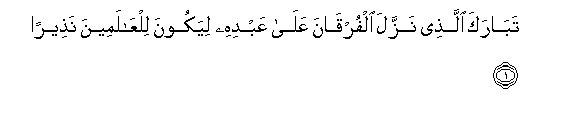
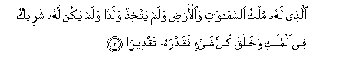
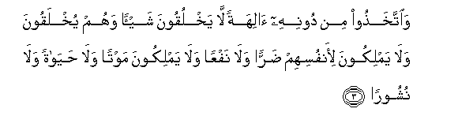
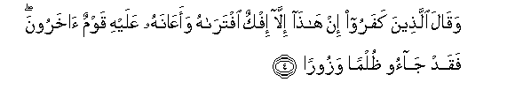
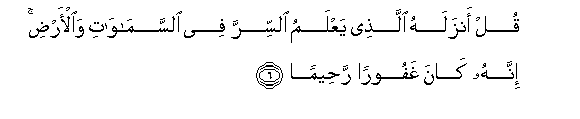
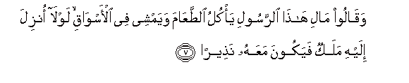
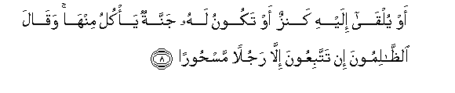
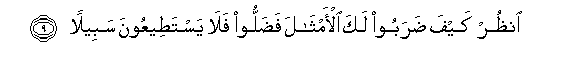

Sacred Texts Islam Index
Hypertext Qur'an Unicode Palmer Pickthall Yusuf Ali English Rodwell
Sūra XXV.: Furqān, or The Criterion. Index
Previous Next

The Holy Quran, tr. by Yusuf Ali, [1934], at sacred-texts.com
Sūra XXV.: Furqān, or The Criterion.
Section 1

1. Tabaraka allathee nazzala alfurqana AAala AAabdihi liyakoona lilAAalameena natheeran
1. Blessed is He Who
Sent down the Criterion
To His Servant, that
May be an admonition
To all creatures;—

2. Allathee lahu mulku alssamawati waal-ardi walam yattakhith waladan walam yakun lahu shareekun fee almulki wakhalaqa kulla shay-in faqaddarahu taqdeeran
2. He to Whom belongs
The dominion of the heavens
And the earth: no son
Has He begotten, nor has He
A partner in His dominion:
It is He Who created
All things, and ordered them
In due proportions.

3. Waittakhathoo min doonihi alihatan la yakhluqoona shay-an wahum yukhlaqoona wala yamlikoona li-anfusihim darran wala nafAAan wala yamlikoona mawtan wala hayatan wala nushooran
3. Yet have they taken,
Besides Him, gods that can
Create nothing but are themselves
Created; that have no control
Of hurt or good to themselves;
Nor can they control Death
Nor Life nor Resurrection.

4. Waqala allatheena kafaroo in hatha illa ifkun iftarahu waaAAanahu AAalayhi qawmun akharoona faqad jaoo thulman wazooran
4. But the Misbelievers say:
"Naught is this but a lie
Which he has forged,
And others have helped him
At it." In truth it is they
Who have put forward
An iniquity and a falsehood.
5. Waqaloo asateeru al-awwaleena iktatabaha fahiya tumla AAalayhi bukratan waaseelan
5. And they say: "Tales of
The ancients, which he has caused
To be written: and they
Are dictated before him
Morning and evening."

6. Qul anzalahu allathee yaAAlamu alssirra fee alssamawati waal-ardi innahu kana ghafooran raheeman
6. Say: "The (Qur-ān) was sent down
By Him Who knows
The Mystery (that is) in the heavens
And the earth: verily He
Is Oft-Forgiving, Most Merciful."

7. Waqaloo mali hatha alrrasooli ya/kulu alttaAAama wayamshee fee al-aswaqi lawla onzila ilayhi malakun fayakoona maAAahu natheeran
7. find they say: "What sort
Of an apostle is this,
Who eats food, and walks
Through the streets? Why
Has not an angel
Been sent down to him
To give admonition with him?

8. Aw yulqa ilayhi kanzun aw takoonu lahu jannatun ya/kulu minha waqala alththalimoona in tattabiAAoona illa rajulan mashooran
8. "Or (why) has not a treasure
Been bestowed on him, or
Why has he (not) a garden
For enjoyment?" The wicked
Say: "Ye follow none other
Than a man bewitched."

9. Onthur kayfa daraboo laka al-amthala fadalloo fala yastateeAAoona sabeelan
9. See what kinds of comparisons
They make for thee!
But they have gone astray,
And never a way will they
Be able to find!